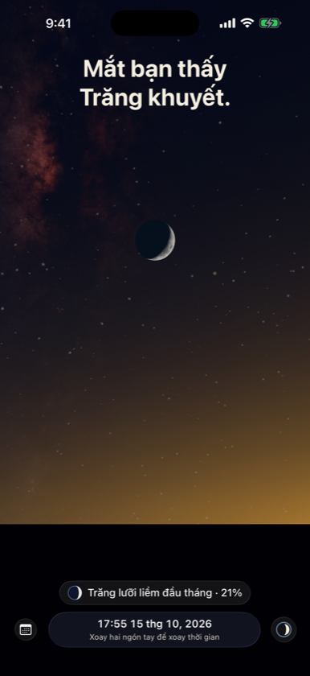
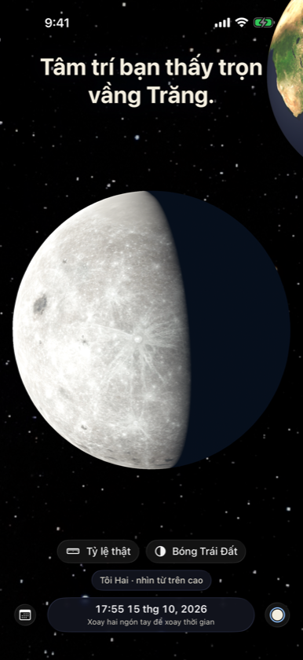
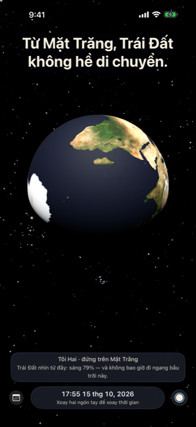

Mắt bạn thấy Trăng khuyết. Tâm trí bạn biết Trăng chưa bao giờ khuyết. Two Egoes là một bầu trời liền mạch mà bạn có thể đứng ở bất cứ đâu — chân trời của bạn, Mặt Trăng, Mặt Trời, hay thật cao trên tất cả.



Đứng trên Mặt Trăng
Trái Đất treo yên giữa bầu trời Trăng, có pha ngược với pha Trăng.
Sao không tháng nào cũng có thực?
Bóng Trái Đất ở khoảng cách Mặt Trăng, đúng tỷ lệ thật, và độ nghiêng 5° quyết định mọi lần thực.
Không gì đứng yên
Ngồi yên trên ghế, mỗi giây bạn đi khoảng 30 km quanh Mặt Trời.